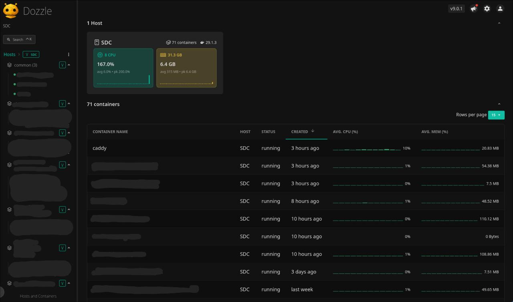
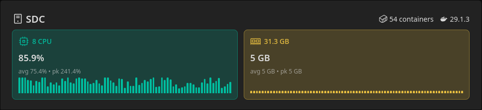

Production Infrastructure Automation
"Engineering a resilient deployment pipeline and container optimization system to manage 11+ production services with 82% resource efficiency improvement."
Problem Statement
Managing 11+ production services across SDC-MUJ infrastructure with bloated Docker images (2GB+) caused deployment failures, infrastructure waste, and manual deployment overhead. The existing workflow lacked automation, resource governance, and efficient container orchestration.
Existing Infrastructure Challenges
- • 2000MB backend images (excessive build context)
- • Manual SSH-based deployments prone to errors
- • No centralized platform for DevOps visibility
- • Resource exhaustion incidents (58-min downtime)
Innovation & Solution Approach
Implemented multi-stage Docker builds, centralized GitOps deployment platform with Ansible automation, and migrated 11 services to optimized infrastructure with kernel-level resource constraints.
System Architecture
System Methodology
GitOps Pipeline
GitHub Actions → Platform API → Ansible Playbook → Docker Compose orchestration with commit SHA-based deployments
Container Optimization
Multi-stage builds, Alpine/Slim base images, production-only dependencies, optimized .dockerignore patterns
NPTEL Platform Optimization
The NPTEL certificate verification platform had 2GB+ Docker images that exceeded the deployment platform's build timeout limits. Multi-stage builds and image optimization were implemented to enable successful deployments.
❌ Before (2000 MB)
BLOATEDFROM node:22-bookworm
WORKDIR /app
# Install ALL Chromium dependencies
RUN apt-get update && apt-get install -y \
chromium \
fonts-liberation \
...50+ packages
# Install ALL dependencies (dev + prod)
COPY package*.json ./
RUN npm install
COPY . .
EXPOSE 5000
CMD ["npm", "start"]✓ After (358 MB)
OPTIMIZED# Stage 1: Builder
FROM node:22-slim AS builder
WORKDIR /app
COPY package*.json ./
RUN npm install --omit=dev
# Stage 2: Production
FROM node:22-slim
WORKDIR /app
RUN apt-get update && apt-get install -y chromium \
&& rm -rf /var/lib/apt/lists/*
COPY --from=builder /app/node_modules ./node_modules
COPY . .
EXPOSE 5000
CMD ["node", "server.js"]Key Optimization Techniques
--omit=dev flag
NPTEL Results
Size Reduction Breakdown
Backend (Before)
2,000 MB
Backend (After)
358 MB
↓ 82% Reduction
1,642 MB saved
Verifier (Python)
786 → 164 MB
↓ 79% Reduction
622 MB saved
NPTEL Platform Impact
2.26 GB
Total Size Reduced
2
Services Fixed
✓
Now Deployable
Problem Solved: NPTEL builds were timing out on the deployment platform due to image size. Optimization enabled successful deployments.
Development Activity
31+
Total Commits
Mar-Apr 2026
11
Repositories
SDC-MUJ Organization
17
ICAIC Commits
Conference Website
Recent Contributions (SDC-MUJ)
Deployment Platform
Centralized GitOps Workflow
How It Works
- 1. Developer pushes code to GitHub repository
- 2. GitHub Actions builds Docker image and pushes to registry
- 3. Platform API receives commit SHA via POST request
- 4. DevOps triggers deployment via platform UI
- 5. Ansible playbook SSHs into server, runs docker-compose pull & up
- name: Sync with Platform run: | curl -X POST \ -H "Authorization: Bearer $PAT" \ "$PLATFORM_URL/image-names/\ $PROJECT/$IMAGE/${{ github.sha }}"
✓ Image pulled: sha-abc123 ✓ Containers restarted ✓ Health check: PASSED
Impact: Migrated 11 services (elective-management, NPTEL, mail-service, auth, ticketing, ICAIC, mentor-mentee, etc.) to this platform, eliminating manual SSH deployments.
Results & Impact
Optimized container images reduced infrastructure costs, enabled successful deployment of NPTEL platform (previously blocked by size limits), and delivered production-ready conference website (ICAIC) with automated CI/CD.
Featured Projects
ICAIC 2026
International Conference on AI & Computing
Developed a full-stack conference management platform in collaboration with another team member. The website serves as the official portal for an international academic conference hosted by MUJ.
Tech Stack
My Contributions
- • Frontend development & UI implementation
- • CI/CD pipeline configuration
- • Deployment & infrastructure setup
- • Integration with SDC deployment platform
Observability Stack
Real-time Monitoring Dashboard
Deployed Dozzle for centralized log streaming across all containers. Zero-config, lightweight alternative to heavy logging stacks like ELK. Accessible only via Tailscale mesh network for security.
- • `dozzle.jpeg` highlights multiple active containers and live operational visibility
- • `dozzle_screenshot.png` captures CPU and RAM usage at a specific instant
- • Together they show both service health and infrastructure load


Technical Appendix
📄 NPTEL Backend Dockerfile (358 MB)
# --- Stage 1: Dependencies ---
FROM node:22-slim AS builder
WORKDIR /app
# Prevent Puppeteer from downloading Chromium
ENV PUPPETEER_SKIP_CHROMIUM_DOWNLOAD=true
COPY package*.json ./
# Install only production dependencies
RUN npm install --omit=dev
# --- Stage 2: Production ---
FROM node:22-slim
WORKDIR /app
# Install Chromium and minimum dependencies
RUN apt-get update && apt-get install -y \
chromium \
fonts-liberation \
libappindicator3-1 \
libasound2 \
libatk-bridge2.0-0 \
libatk1.0-0 \
libcups2 \
libdbus-1-3 \
libgdk-pixbuf2.0-0 \
libnspr4 \
libnss3 \
libx11-xcb1 \
libxcomposite1 \
libxdamage1 \
libxrandr2 \
xdg-utils \
&& rm -rf /var/lib/apt/lists/*
ENV PUPPETEER_EXECUTABLE_PATH=/usr/bin/chromium
ENV PUPPETEER_SKIP_CHROMIUM_DOWNLOAD=true
ENV NODE_ENV=production
# Copy production node_modules from builder
COPY --from=builder /app/node_modules ./node_modules
# Copy source code
COPY . .
EXPOSE 5000
CMD ["node", "server.js"]🐍 NPTEL Verifier Dockerfile (164 MB)
# Stage 1: Builder
FROM python:3.9-slim AS builder
WORKDIR /app
RUN apt-get update && apt-get install -y \
build-essential \
&& rm -rf /var/lib/apt/lists/*
COPY requirements.txt .
RUN pip install --user --no-cache-dir -r requirements.txt
# Stage 2: Final
FROM python:3.9-slim
WORKDIR /app
RUN apt-get update && apt-get install -y \
libglib2.0-0 \
&& rm -rf /var/lib/apt/lists/*
COPY --from=builder /root/.local /root/.local
ENV PATH=/root/.local/bin:$PATH
COPY . .
EXPOSE 8000
CMD ["uvicorn", "app.main:app", "--host", "0.0.0.0", "--port", "8000"]📦 Enhanced .dockerignore Patterns
# Dependencies
node_modules
npm-debug.log
# Version Control
.git
.gitignore
# Environment
.env
.env.*
# Testing (NEW)
tests
__tests__
*.test.*
*.spec.*
jest.config.js
vitest.config.js
setupTests.js
# Development Tools (NEW)
inspect_pdf.js
logo.txt
# Build Artifacts
dist
build
coverage⚙️ Infrastructure Specifications
Container Orchestration
- • Docker Compose v2
- • Resource limits via cgroups
- • Health checks enabled
- • Restart policies: unless-stopped
CI/CD Pipeline
- • GitHub Actions (Ubuntu latest)
- • Docker Buildx (multi-platform)
- • Private Docker Registry
- • SHA-based image tagging
Deployment Automation
- • Ansible 2.14+
- • SSH key-based auth
- • Idempotent playbooks
- • Zero-downtime strategy
Observability
- • Dozzle (real-time logs)
- • Docker healthchecks
- • Tailscale mesh network
- • Prometheus metrics (planned)
Academic Credits
Project Guide
Dr. Dibakar Sinha
Student
Vinayak Tyagi
2427030346